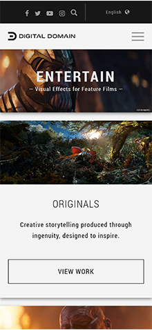

Rule of Thirds
Luma Pictures
lumapictures.comThey have nothing in the center of the screen, it is more apparent in the desktop version but in the mobile version they have something up top, a logo of what they worked on upper middle and then they’re name and slogan on the bottom.
Rule of Fitt's
Digital Domain
digitaldomain.com The main thing people will come to this site for is to see the work done by them. They made the link to their work land right where your thumb would be when your browsing to the site